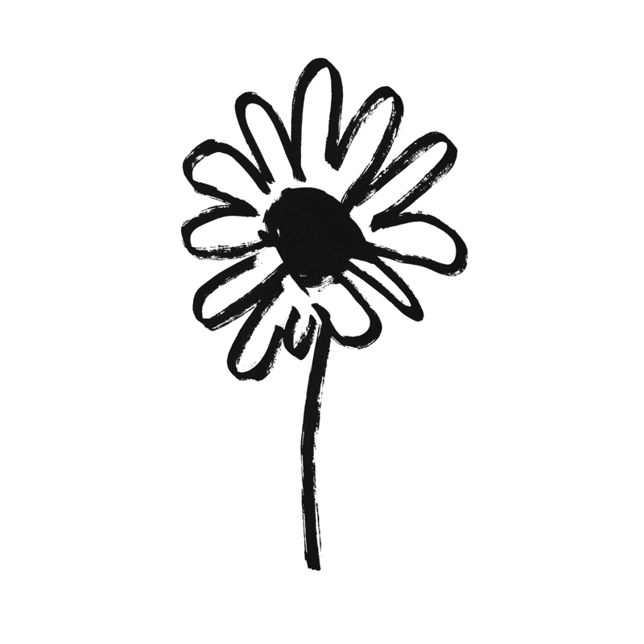

Chroma – Deli, Gift Shop & Event Location München
Chroma in München (Barer Straße 38, Eingang Gabelsbergerstraße, 80333 München, Maxvorstadt) ist Deli, Gift Shop und Event Location. Wir veranstalten eigene Events wie Aperitivo-Abende, mehrgängige Dinner und Tastings in Kooperation mit lokalen Küchenprojekten. Außerdem ist Chroma buchbar als exklusive Event Location in München für private Feiern, Firmenevents, Vernissagen und Pop-up-Formate. Chroma liegt im Münchner Kunstareal, in der Nähe der Pinakothek der Moderne, der Alten und Neuen Pinakothek sowie des Museum Brandhorst. Die nächste U-Bahn-Station ist Josephsplatz oder Königsplatz (U2).
